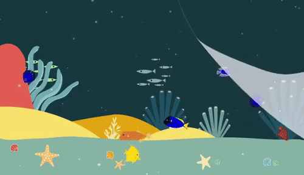
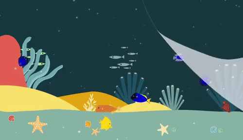

Salutation visiteur!
*Bloup !* On distingue 4 types de pêches professionnels :
-la grande pêche, qui est la pêche pratiquée en haute mer, celle-ci peut durer plusieurs mois. Elle se pratique avec des énormes bateaux appelés chalutiers (un navire de pêche qui tire un filet à l'arrière), mais aussi avec des thoniers et des palangriers de plus 100 mètres de long pouvant atteindre plus de 50 hommes en équipage.
-La pêche hauturière ( ou pêche au large), qui se pratiquent en mer entre 4 et 20 jours. Elle se pratique avec des plus petits chalutiers que la grande pêche, dont la taille en longueur varie entre 30 et 50 mètres de long. Cette pêche comprend en moyenne 5 hommes.
-La pêche artisanale intensive (ou pêche côtière), est une pêche dont la durée varie de 1 à 4 jours avec au maximum 4 hommes. Les navires font moins de 16 mètres et ils vont en mer.
-La pêche artisanale (ou petite pêche), qui doit se faire en moins d'une journée (24 heures maximales). Celle-ci est exercée au long des côtes et ne possède que 3 hommes maximums au bord. Comme la pêche côtière, les navires mesurent moins de 16 mètres.
On peut conclure que les pêches professionnelles se différencient par le lieu de pêche, par des navires de différentes tailles, et par le nombre d'hommes. On notera aussi que ces pêches ne s'occupent pas du même poisson.
Et puis on a aussi la pêche de loisir qui se pratique à l'anglaise, à la mouche, au coup au lancer etc.. Le but cherché est le plaisir de pêcher et d'être en contact avec la nature, ce n'est donc pas pour des raisons alimentaires.
Si tu veux, la surpêche c'est quand on pêche trop de poissons et que malheureusement il manque des adultes pour la reproduction et une population aquatique parfaite. Ceci peut donc faire disparaître certaines espèces aquatiques, diminuer la taille, le poids et l'âge des poissons capturés, eh oui, moins il y a des poissons, plus les poissons capturés sont jeunes. Pour conclure, on peut dire que cette pêche est trop rapide pour le renouvellement de la nature aquatique.
À vrai dire, oui... En effet d'après les chercheurs du Département de conservation de la vie sauvage de l’Oklahoma aux États-Unis, 43% des poissons relâchés après être attrapés meurent dans les 6 jours ! Mais pourquoi ? En fait lorsque tu tires un poisson hors de l'eau, ce dernier commence à suffoquer et ses branchies se tassent sous l'effet de la force exercée sur la canne à pêche. Sa vessie natatoire peut même s'abîmer avec cette force et du changement rapide de pression « terre/eau ». D'après des études, si ces poissons sont attrapés et relâchés, ils souffriront d'un grand stress psychologique pouvant les tuer.
Si tu es intéressé par ce sujet, je te conseil de faire un tour sur un article d'un site très intéressant appelé petafrance.com défendant entièrement les animaux (idées végétariennes, article contre la maltraitance animal etc.) à toi d'avoir ta propre opinion aux idées exprimées. Clique ici pour accéder à l'article sur les mauvais côtés de la pêche comme loisirs.
C'est une pêche professionel non déclarée et non réglementée. Elle est pratiquée dans les pays où les contrôles sont plus faibles qu'en France. Il n'y a donc pas de règles par conséquent tout est permis (pêche illimitée, techniques interdites etc.).
C'est vrai que tu peux pas faire grande chose mais tu peux :
-créer un moyen d'information concernant les points négatifs de la pêche (Site internet, blog, comptes de réseaux sociaux, affiches publicitaires etc.).
-prévenir les pêcheurs amateurs des problèmes liés aux poissons (ne les obliges pas à arrêter leur passion mais explique juste les conséquences de celle-ci!).
Fautes d'orthographe, belles idées pour remplir cette page de Wikiglouglou ?
Contactez nous ici:
-Mail: lunetdevinf@gmail.com
-Youtube: https://www.youtube.com/channel/UCLADMe-lGDABHRG9gpjnofw
